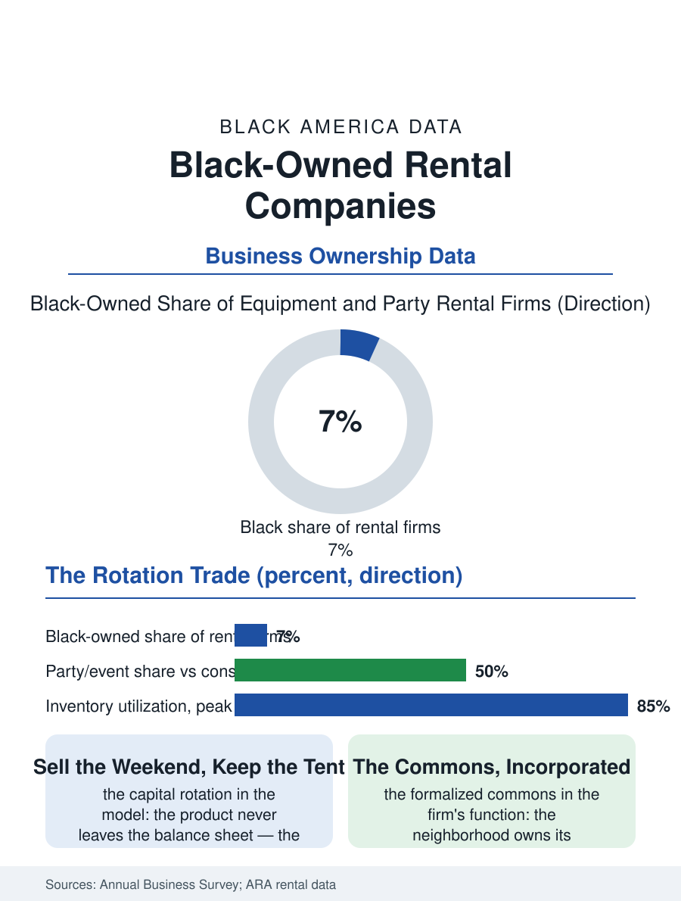

Black Business
Everyone's Warehouse: Black-Owned Rental Companies
The tent that serves fifty weddings and stays on the balance sheet, the commons incorporated as a rate card. The rental file.

The equipment and party rental store is the celebration and construction economies' shared warehouse: the tables and the tent for the wedding, the lift and the compactor for the job, rented by the weekend and the month from a yard whose inventory is the firm's capital entire. Black-owned rental firms operate across both tiers. The business census counts the rental and leasing establishments in the thousands. This article reads the rental file.
Inventory as the Business
The model's singularity is that the product never leaves the balance sheet: the tent rents fifty weekends and is still the firm's, so that the rental business is a capital rotation trade, its skill the inventory's choosing, the maintenance's discipline, and the utilization's calendar, the rate of the days each piece earns against the days it sits, a metric the industry's software now prices as fluently as the airlines'. The party tier's calendar is the celebration file's own, the wedding season's Saturdays booked a year deep, the church and the family reunion trade being the neighborhood firm's base load, with the delivery and the setup, the crew that raises the tent and lays the dance floor, as the service that converts the yard into the event's contractor. The construction tier is the contractor file's supplier, its terms the account and the damage waiver, its competition the national rental giants whose fleets the local firm's service must outrun rather than outprice. The film and event production tier in the content metros is the yard's premium calendar, the productions renting by the month at the rates the insurance requires be respected, and the local firm that wins the production's standing account has climbed the ladder's least visible and most lucrative rung, its yard becoming the industry's local infrastructure in the pattern of the other rooted suppliers. The winter's storage and the off-season's maintenance are the calendar's discipline made visible, the yard in January a portrait of the capital at rest, its owner's eye already on the spring's bookings.
The Yard's Ladder
The entry ladder is the file's openness: the first tent and the fifty chairs, bought with the founder's savings and rented from the driveway, is a founding within a working family's reach in the pattern of the cleaning file's vacuum, and the ladder above it, the enclosed trailer, the yard, the second truck, the construction line, is climbable on the calendar's cash flow with the discipline the inventory demands, so that the rental file contains the business section's standard range, the micro firm of the weekends and the multi-yard regional whose fleet serves the film productions and the festival circuit. The loss file is the trade's tax: the damage and the non-return, the deposit's and the contract's enforcement, priced into the rate in the open, with the neighborhood firm's advantage being the knowledge of its customers that the national's anonymity cannot replicate, the same trust economy as the credit files', wearing a tent.
Everyone's Warehouse
The rental file closes on the firm's place in the community's infrastructure, because the rental store is how the neighborhood owns things jointly without owning them: the tent under which its weddings and its repasts and its reunions happen is the firm's, held in common by the calendar, an arrangement whose antiquity, the church's own chairs lent before the firm existed, the business merely formalized into a rate card. The succession and consolidation files follow the other yards': the regional platforms acquiring the established locals for their inventory and their accounts. The census counts the rental establishments in the thousands across the categories. The file's last entry is the Friday load-out, the tent and the tables and the dance floor going out to three celebrations at once, the yard emptying into the neighborhood's weekend, which is the firm's whole purpose in a single dispatch, the community's occasions quite literally carried on its trucks. The deposit's return, counted at the tailgate with the customer in the yard's evening light, is the trade's small ceremony of trust completed, repeated every Monday in both directions. The yard's gate at dawn on the season's first Saturday is the trade's new year, and the regulars are already at it. The gate swings on the season's hinge.
More in Black Business
Black-Owned Businesses: Counts, Receipts, and the Representation Gap
About 161,000 Black-owned employer firms and three million solo ventures: how the Census Bureau counts Black business ownership, where firms concentrate, and the gap between population share and business share.
Black Median Net Worth: The Wealth Gap in Federal Reserve Data
The Federal Reserve puts Black median family net worth at $44,900, against $285,000 for White families — about 16 cents on the dollar. The widest gap in economic data.
Black Buying Power: The $1.8 Trillion Consumer Economy
Black buying power is estimated at about $1.8 trillion — larger than the economy of most nations. What the figure measures, who produces it, and what it buys.
Source: U.S. Census Bureau, Annual Business Survey for rental and leasing services; American Rental Association industry data.